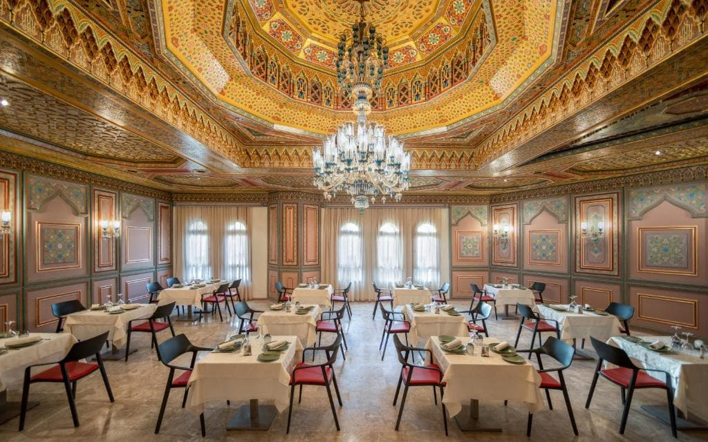
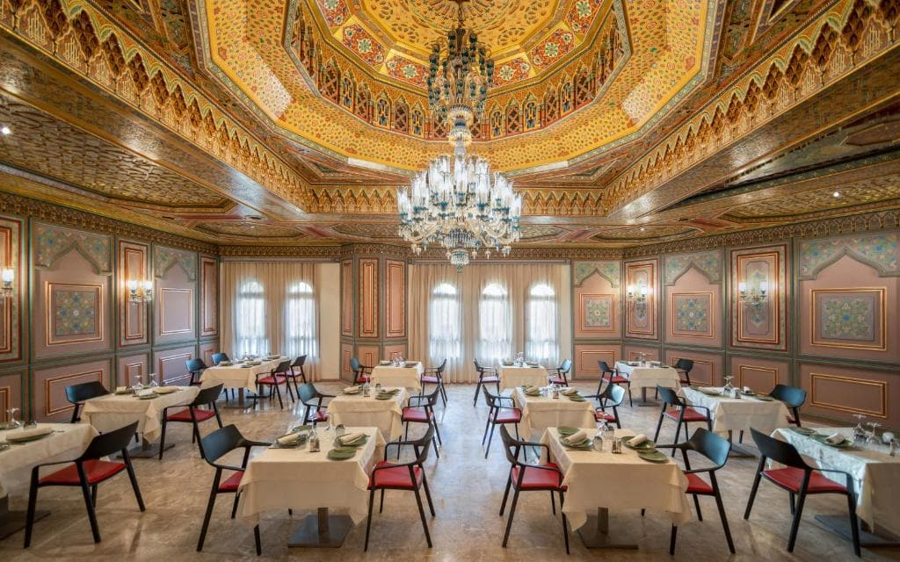
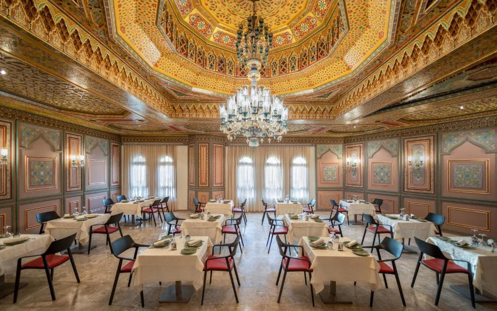

Bienvenue au Royal Azur Hotel Thalassa
 


Hammamet, Tunisie - Station touristique

L’Hôtel Royal Azur Thalassa propose une découverte Tunisienne à travers une déambulation dans ses espaces à caractère culturel profond. Grâce à son emplacement unique, contemplez le soleil se coucher avec vue sur mer depuis notre piscine à débordement et profitez d’infrastructures d'une qualité exceptionnelle.
Situé à un kilomètre de la célèbre médina de Hammamet, dans un jardin méditerranéen dominant l’une des plus belles criques de sable fin du Cap Bon. À 1.3 km de la plage de Aziza et à 2.6 km de celle de Mrezga.
L’Hôtel Royal Azur Thalassa mis à la disposition de ses clients différents restaurants telles que:
Gastronomie Internationale en buffet, Diner Thématique avec 3 soirées par semaine (pécheur, asiatique & oriental), le restaurant est d’une capacité de 400 couverts. la kasbah est un restaurant à la carte avec spécialité emblématique pour découvrir la gastronomie tunisienne.
L'hôtel dispose de 116 Premium Rooms réparties comme suit :